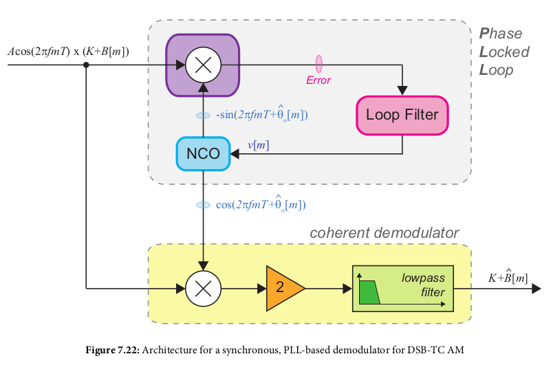
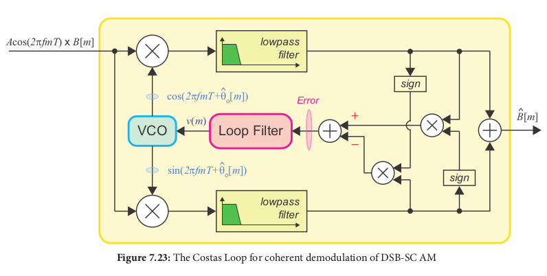

Select a frequency band of interest and capture/receive signals within that band. Center frequency is the local oscillator (LO). Bandwidth set by filtering and setting of sample rate
The need to correct for differences in time/frequency (e.g. frequency difference of the carrier signal)
Radio signals go through attenuation, noise, interference, fixed or time varying propogation delay (translates into a phase shift of θ degrees), and multipath propogation. If the transmitter/receiver are moving, the propogation delay can increase or decrease over time (translates into a frequency shift ("doppler shift")).
Are able to recreate an input sinusoid, track deviations in its frequency, and reject noise. Obtains "Phaselock" when the output PLL sine wave converges to the same original TX signal frequency (not necessarily same PHASE, but same FREQUENCY).
Made up of 3 components:
Coherent RX extracts the transmitted carrier component and uses it to demodulate to baseband. Done using a PLL with the carrier as the input reference signal.
for SC, the carrier is not explicitly present. Have to recover the carrier from the modulated RX signal, then demodulate. Commonly used way to do this is the "Costas Loop."
